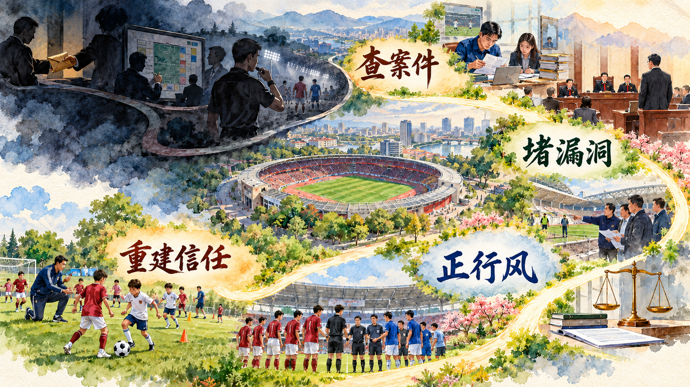

查处一个案件以后，怎样继续治理一个领域
反腐败斗争既要惩治具体腐败行为，也要完善权力运行和监督制度，推动干部增强拒腐防变能力。本节通过案件查处、行业治理和数字取证，理解一体推进不敢腐、不能腐、不想腐的内在联系。
一、腐败是党长期执政面临的最大威胁
腐败侵蚀党的先进性和纯洁性，损害公平正义，破坏党同人民群众的血肉联系。权力集中、资金密集、资源富集领域容易形成寻租空间，基层小微权力同群众切身利益直接相连，也需要严密监督。
数字技术使资金流转更快、账户形式更多，腐败行为也会留下交易、登录、审批和通信痕迹。反腐败治理要理解新技术、新业态和新型支付工具，在业务事实与数字证据之间建立对应关系。
案例研究｜58 次转出 530 万元：公款怎样进入比特币账户
朱士伟在基层农经岗位工作，先后担任副站长、站长并兼任出纳，管理范围涉及 53 个村的相关资金。负责人身份使他能够接触资金安排和审批，出纳身份又使他掌握支票开具和网上银行转账。决定资金用途、办理支付和接触账目集中到同一人手中，他可以从公共账户发起转账，再把资金导入个人控制的投资渠道。
在较长时间内，他先后 58 次转出公款，共计 530 万余元，资金被用于股票、基金和比特币交易。每次转出的资金进入个人银行账户后，还会继续分流到不同投资账户。股票和基金形成申购、赎回记录，比特币交易又形成新的买卖与价格变化，最初从公共账户转出的一笔钱因此可能在多个平台上留下不同数额和不同时间的记录。投资出现损失后，新的公款又被转出补充资金，公共账户与个人投资之间形成反复流动。
这条资金链同时跨越公共账户、个人银行账户、证券基金账户和虚拟资产交易环节。公共账户记录资金从哪里离开，个人银行账户显示资金向哪里分流，证券和基金账户记录买入卖出，虚拟资产交易记录则呈现另一段资金变化。单独查看任何一个平台，只能看到整条链条中的一段。调查人员需要以转出时间和金额为起点，把到账、下单、赎回、再次转账和消费记录排列在同一时间轴上，才能确认各段交易的对应关系。价格涨跌改变账户余额以后，追踪重点转向交易路径和控制关系。
调查人员面对七年账目、13 个个人银行账户和约 5 万条交易记录。第一步从村级公共资金账目中筛出缺少正常业务依据的支出，确定 58 次异常转账的日期和金额；第二步查找对应收款账户，确认账户由谁实际控制；第三步沿证券、基金和比特币交易继续追踪资金用途；第四步把银行流水同财务凭证、业务审批和登录操作逐项比对，判断每笔转账是否经过真实业务程序。七天的集中核查还原了 58 次转账及其用途，形成“岗位权限—公共账户转出—个人账户承接—投资平台分流”的证据链。朱士伟被判处有期徒刑十年，并承担退赔责任。
案件整改进入权限分设、印章和网银管理、村级资金对账与异常交易预警。审批、记账、付款和账户管理由不同主体承担，村级资金去向定期公开，长期无人核对的账户得到清理。
讨论题
- 这起案件中，哪些权限集中使连续转账成为可能？
- 面对多账户和虚拟资产，调查人员为什么要把业务凭证与交易时间逐项对照？
- 你会为村级公共资金设置哪些低成本、可持续的预警规则？
资料来源：中央纪委国家监委网站《揭开 58 次转账背后的公款投资链条》及相关案件剖析材料。
新闻摘录｜虚拟货币和“马甲账户”能否藏住利益输送
在姚前案中，调查人员面对的资金不只经过普通银行账户。有关利益通过虚拟货币和多层“马甲账户”流转，账户名称、实际控制人和业务关系相互分离。办案人员把数字货币交易、设备信息、通信联系和现实请托事项放到同一时间线上，逐步穿透账户层级，确认利益输送与职权行为之间的联系。
数据监督也能从业务端发现异常。浙江江山把招投标主体、联系方式、设备和历史交易等信息进行碰撞，系统对疑似串通投标关系发出风险提示。监督人员沿提示开展线下核查，进一步发现冯江有关问题。算法提供线索，调查谈话、书证和业务事实共同完成认定。
这些实践说明，数字反腐需要技术人员、业务人员和纪检监察人员协同。技术人员识别账户与设备关联，业务人员解释审批和交易流程，调查人员依法收集证据并形成闭合链条。数字工具提高发现异常的能力，规范程序保证证据能够经受检验。
讨论题
- 多层账户和虚拟货币给传统资金调查增加了哪些困难？
- 数据系统发现“异常关联”以后，为什么还要回到合同、审批和人员关系进行核查？
- 使用数据监督时，怎样同时保障调查准确性和个人信息安全？
资料来源：中央纪委国家监委网站《二十届中央纪委五次全会工作报告解读：提高反腐败穿透力》，2026 年 1 月 15 日。
二、坚持标本兼治开展反腐败斗争
一体推进不敢腐、不能腐、不想腐，是反腐败斗争的基本方针和新时代全面从严治党的重要方略。不敢腐强调惩治和震慑，不能腐强调制度和监督，不想腐强调思想教育和价值自觉。三者同时发力，使案件查处、制度整改和教育引导相互贯通。
参考资料｜不敢腐、不能腐、不想腐为什么要同时发力
不敢腐通过严肃惩处形成震慑，使伸手必被捉成为稳定预期。不能腐通过权力配置、制度流程、公开监督和技术控制压缩寻租空间，使关键事项留下记录、接受复核。不想腐通过理想信念教育、党性教育、纪律教育和廉洁文化建设，使党员干部形成正确的权力观、政绩观和事业观。
三者具有内在联系。案件揭示制度漏洞，为流程再造提供具体对象；制度执行把纪律要求嵌入日常工作；教育借助真实案例说明权力边界；干部的思想自觉又提高制度执行质量。惩治、制度和教育在同一治理过程中形成合力。
资料来源：本书编写组《习近平新时代中国特色社会主义思想概论》，高等教育出版社、人民出版社，2023 年；中央纪委国家监委关于一体推进不敢腐、不能腐、不想腐的权威阐释。
案例研究｜当比分被权力和金钱改写：中国足球怎样从案件查处走向行业治理
周末看球时，球迷会为一次绝杀欢呼，也会为一次误判争论。比赛成立的前提，是每个人相信结果来自训练、战术和临场发挥。当俱乐部准入、球员转会、教练选聘、裁判安排和赛事组织受到权力与金钱影响，比分仍然显示在屏幕上，比赛的可信度却已经受损。中国足球领域系列案件把这种损害背后的利益链呈现出来。
第一条线索通向协会管理权。法院审理查明，2010 年至 2023 年，陈戌源利用担任上海国际港务集团总裁、董事长以及中国足协换届筹备组组长、主席等职务上的便利，为有关单位和个人在项目承揽、投资经营、赛事安排等事项上提供帮助，非法收受财物折合人民币 8103 万余元，其中 400 万元未实际取得。2024 年 3 月 26 日，法院以受贿罪判处其无期徒刑，剥夺政治权利终身，并处没收个人全部财产。案件把抽象的“协会权力”还原为赛事安排、经营机会和行业资源等具体事项。
第二条线索从俱乐部赛场一直穿到国家队。李铁案最值得追问的地方，是球队成绩、个人履历、教练职位、球员机会和俱乐部商业利益怎样被连成了一条循环运转的利益链。
这条链从制造球队成绩开始。2015 年 8 月，李铁第一次独立担任职业俱乐部主教练，加盟河北华夏幸福时，中甲赛季只剩 9 场，球队排名第 6，正常冲超难度很大。俱乐部希望短期内迅速提高成绩和品牌影响力，提出动用关系影响对手。李铁上任后，球队在最后 8 场取得连胜，最终以领先竞争对手 1 分的成绩升入中超。
最后一轮尤其能够说明成绩怎样被金钱介入。河北华夏幸福只要战胜或战平深圳宇恒就能确保冲超。公开调查材料显示，俱乐部为这场比赛支出约 1400 万元，同对方俱乐部、教练和有关人员打招呼；李铁的教练团队又从球员层面增加一道“保险”，联系对方主力后卫黎斐。黎斐开价 600 万元，声称可以帮助联系多名关键球员，实际把这笔钱留在自己手中。河北华夏幸福最终以 2∶0 获胜。一支实力本来占优的球队仍然选择购买确定性，比赛胜负因此从训练和战术问题变成了资金和关系问题。
2017 年，李铁转任武汉卓尔主教练。他把此前使用的方式带入新的俱乐部，主动向俱乐部负责人提出通过场外操作争取有利结果。武汉卓尔于 2018 年提前三轮冲超成功。检察机关后来指控，2015 年至 2019 年，李铁先后在河北华夏幸福、武汉卓尔任职期间，为赢得比赛或取得有利结果，同俱乐部负责人商定，请托其他俱乐部在比赛中配合或消极比赛，两家俱乐部为此向有关人员支付钱款共计折合人民币 3905 万余元。两次冲超成绩提高了李铁在足球行业中的声望，也成为他竞争国家队教练职位的重要履历。
李铁还在不同俱乐部之间经营球员和比赛资源。检察机关指控，2017 年至 2019 年，他利用担任武汉卓尔总经理、主教练的便利，为此前任职的河北华夏幸福在球员转会、赢得比赛等事项上提供帮助，先后收受该俱乐部给予的人民币 2675 万元。教练对球员的评价、转会建议和比赛安排原本属于专业判断，在利益交换中却可以变成俱乐部购买的资源。
虚假成绩进一步被转换为教练职位。2019 年 8 月，中国足协准备组建男足国家选拔队参加东亚杯。李铁希望借此进入国家队教练岗位，一方面说服武汉卓尔出资为其运作，并承诺上任后帮助俱乐部提高影响力、协调资源；武汉卓尔为此向时任中国足协主席陈戌源给予 200 万元。另一方面，李铁又向时任中国足协秘书长刘奕给予 100 万元，请托其在选聘过程中提供支持。李铁随后担任男足国家选拔队主教练，并于 2020 年 1 月出任男足国家队主教练。
取得国家队职位后，球员入选机会成为新的交换资源。公开调查材料显示，李铁确认获得职位的第二天便到武汉同卓尔俱乐部商谈。他提出可以把俱乐部球员带入国家队、安排一定上场时间，并在足球管理和行业资源方面给予帮助；双方以总额 6000 万元的所谓合同包装交易。此后，武汉卓尔 4 名球员进入国家队大名单。原俱乐部负责人看到名单后表示，这些球员依据当时能力难以全部进入国家队。国家队名单既关系球员荣誉和职业发展，也会提高球员身价与所属俱乐部影响力，公共性的选拔权由此被转换成了可交易利益。
法院认定的受贿事实覆盖了这条权力链的后半段。2019 年至 2021 年，李铁利用男足国家选拔队、男足国家队主教练职务上的便利，为有关单位和个人在球员入选国家队、赢得比赛、签约俱乐部等事项上提供帮助，非法收受人民币共计 5089 万余元。从买比赛取得成绩，到用成绩积累个人声望，再以行贿获取国家队职位，继而利用选人、上场和签约权收受利益，几个看似分散的环节形成了“购买成绩—换取职位—配置机会—收取利益”的循环。
2024 年 12 月 13 日，李铁被以受贿罪、行贿罪、单位行贿罪、非国家工作人员受贿罪、对非国家工作人员行贿罪数罪并罚，判处有期徒刑二十年。2025 年 4 月 30 日，湖北省高级人民法院二审裁定驳回上诉、维持原判。五项罪名对应他在俱乐部管理者、职业教练和国家队主教练等不同身份中的行为，也呈现了利益给予者与接受者角色相互转换的过程。
案件查处还延伸到比赛操纵和赌博。2024 年 9 月，公安机关将第一批 61 名涉案足球从业人员的案件材料通报体育主管部门和中国足协。中国足协依据纪律准则，对其中 43 人作出终身禁业处罚，对 17 人作出五年禁业处罚，并再次通报一名此前已被终身禁业、后来又因开设赌场罪受到刑事处罚的人员。2026 年 1 月，中国足协又依据司法机关移交材料，对陈戌源、李铁等 73 名构成犯罪的从业人员作出终身禁业处罚，并对 13 家涉案俱乐部作出扣除联赛积分和罚款处罚。司法责任、个人行业禁入和俱乐部竞赛处罚共同进入治理链条。
为什么查了人还要改制度？长期以来，中国足协对职业联赛存在“管、办、督”职责交叠，办赛者同时承担部分监管职责，权力运行的外部制约和公开机制不足。一个关键决定由谁提出、谁审议、谁执行、谁监督，界面不够清晰时，俱乐部、协会人员、教练员和其他市场主体之间更容易形成封闭关系网。
2025 年 1 月，中国足球职业联赛联合会成立，负责中超、中甲、中乙三级职业联赛的组织运营。中国足协继续承担行业监管、俱乐部准入审查、纪律和仲裁等职责。管办分离把组织比赛和监督比赛分配给职责不同的主体，联赛议事委员会则让俱乐部通过规则参与共商。赛事安排、突发事件处理和日常运营逐步进入公开规则。
行业治理同时落到赛场边。2024 年施行的《体育赛事活动赛风赛纪管理办法》把操纵比赛、抽签打分中的徇私舞弊、消极比赛等列为违规情形，并明确分级分类管理和全过程监管。中国足协建立“假赌黑”举报处理机制，聘请社会监督员；职业联赛推进裁判评议、技术监测、俱乐部准入、清理欠薪欠款和青训梯队建设。举报线索、公安侦查、纪检监察、行业纪律和赛事治理由此形成衔接。

对一名青年球员来说，公平的选拔和稳定的青训体系决定努力能否转化为比赛机会；对一家俱乐部来说，透明准入、财务纪律和欠薪治理决定能否长期经营；对球迷来说，裁判评议、举报反馈和纪律处罚决定每一张球票背后的信任。中国足球从案件查处走向行业治理，形成“查案件、断利益链、分离权责、公开规则、重建青训与球迷信任”的治理路径。
讨论题
- 足球腐败为什么会同时伤害比赛公平、球迷信任和青训发展？
- 从陈戌源案和李铁案呈现的不同角色出发，协会、联赛运营机构和俱乐部之间应怎样配置权力并相互监督？
- 如果让你设计一页“联赛透明度看板”，你会公开裁判评议、俱乐部财务、纪律处罚和青训投入中的哪些信息？
资料来源：中央纪委国家监委网站《陈戌源案等 5 起足球领域腐败案件一审宣判》，2024 年 3 月 26 日；最高人民检察院《中国国家男子足球队原主教练李铁案二审维持原判刑期 20 年》，2025 年 4 月 30 日；央视新闻客户端、新华网《行贿 300 万元上位国足主帅，李铁用天价“合同”送 4 名球员进国家队》和《年度反腐大片第四集〈一体推进“三不腐”〉》，2024 年 1 月 9 日；国家体育总局、公安部《深化足球职业联赛“假赌黑”问题专项整治》，2024 年 9 月 10 日；新华社《陈戌源、李铁等 73 人被终身禁止从事足球活动》，2026 年 1 月 29 日；国家体育总局《中足联负责人就中国足球职业联赛管办分离改革答记者问》，2025 年 1 月 23 日；国家体育总局《体育赛事活动赛风赛纪管理办法》，2024 年 4 月 12 日。
参考资料｜党纪、政务处分与刑事责任怎样衔接
党员违反党的纪律，由党组织依规依纪开展审查并作出党纪处分；公职人员存在职务违法行为，由监察机关依法调查并作出政务处分；涉嫌职务犯罪的案件，经监察机关调查终结后移送人民检察院审查起诉，由人民法院依法审判。
三类责任依据不同规范、由不同机关依照相应程序作出。一个案件可能同时涉及党员身份、公职身份和犯罪事实，纪法贯通使线索处置、证据审查、案件移送和责任追究相互衔接。处分决定、监察调查和司法裁判共同维护纪律与法律的严肃性。
资料来源：《中国共产党纪律处分条例》；《中华人民共和国监察法》；《中华人民共和国公职人员政务处分法》；《中华人民共和国刑法》《中华人民共和国刑事诉讼法》。
三、反腐败必须永远吹冲锋号
腐败问题具有顽固性和反复性，反腐败斗争需要保持战略定力。重点领域、重点岗位和新型腐败、隐性腐败持续变化，监督方式也要更新。受贿行贿一起查、风腐同查同治、案件查办与整改治理贯通，能够持续铲除腐败滋生的土壤和条件。
新闻摘录｜凌晨五点半送进学校的菜，怎样经过采购、验收和家长监督
清晨五点半，食材配送车驶入校园。蔬菜、肉类、粮油从供应商交到学校后，要经过称重、查验票证、质量检查和双人验收，再进入仓储和厨房。采购合同、送货单、验收单、出入库记录和菜单价格把一筐菜连接到一笔资金。
一些地方把校长、后勤人员、教师代表和家长委员会纳入不同监督环节。家长代表可以查看食材品质和厨房操作，学校公开带量食谱、供应商和费用信息，教育、市场监管和纪检监察部门对采购招标、资金使用和食品安全开展检查。发现价格异常、数量不符或供应商关联后，监督人员沿合同、流水和现场继续核查。
校园餐治理把学生每天可见的一顿饭同公共资金和权力运行连接起来。早晨验收解决“送来的是什么”，台账和支付解决“买了多少、花了多少”，家长和学生反馈解决“实际吃到什么”，部门监督继续检查采购决策与责任落实。
讨论题
- 从采购到学生餐桌，哪些环节适合家长参与，哪些环节需要专业监管？
- 菜单、采购价、验收单和支付流水怎样相互验证？
- 如果食材质量合格而采购价格长期明显偏高，监督应继续追踪哪些关系？
资料来源：中央纪委国家监委网站《深化整治中小学“校园餐”突出问题》，2026 年 6 月 1 日；中国纪检监察杂志校园餐监督专题材料，2026 年 6 月。